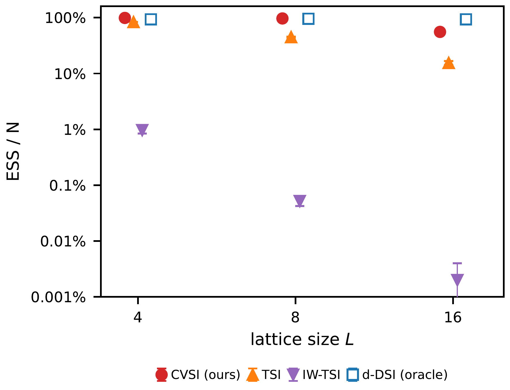
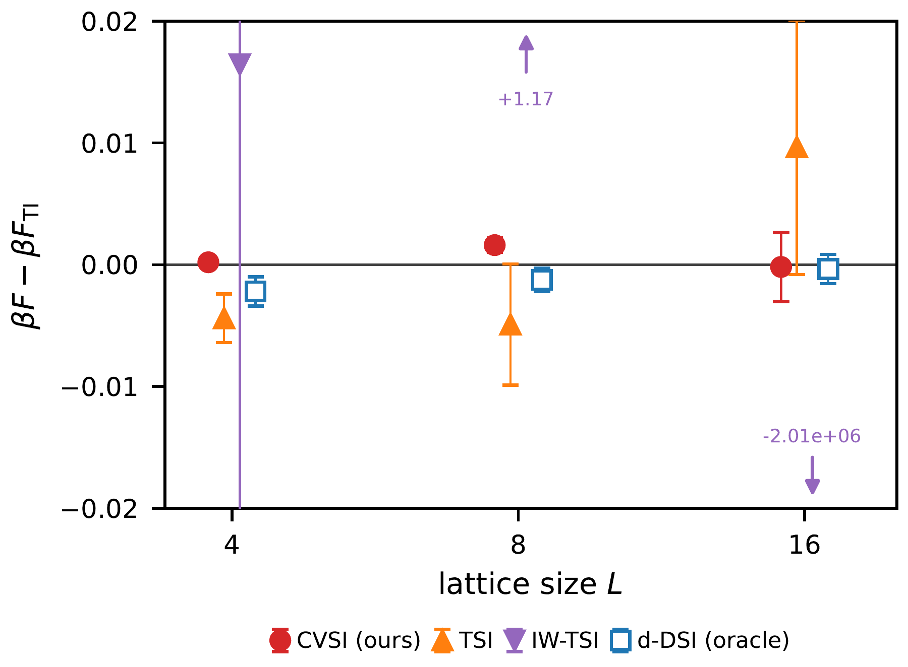
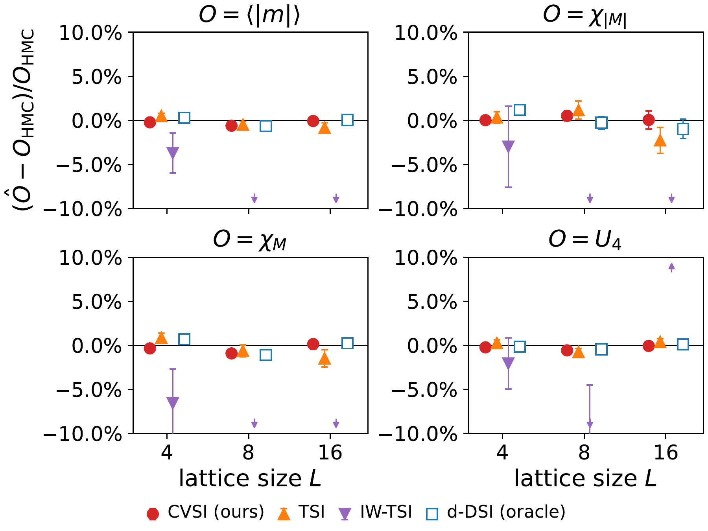

Lattice field theory · Generative modelling
Data Free Training of Diffusion Models for Lattice Field Theories
1 BIFOLD 2 Technische Universität Berlin 3 DESY
4 The Cyprus Institute 5 RIKEN AIP
Abstract
Sampling equilibrium field configurations remains a major computational bottleneck in lattice field theory, motivating the development of generative samplers that can produce independent configurations. Diffusion models are promising for this purpose, but their standard denoising score matching objective requires samples from the target distribution, seemingly reintroducing the original sampling problem. Here, we show that diffusion models can instead be trained from their own generated samples using the target score identity, provided access to the unnormalized probability density. Importance-weighted formulations of this identity yield a consistent target throughout training, while unweighted variants define a self-consistent fixed-point training scheme. We benchmark the different approaches in two-dimensional φ4 theory and identify effective choices that enable efficient training and sampling across the symmetric, critical, and broken phases. Ultimately, our data-free training approach achieves comparable performance to training on HMC reference data.
A view of the configurations
HMC vs. CVSI
Generate → perturb → update → repeat. In each outer round, the current EMA sampler generates a buffer of field configurations. Inner-loop updates perturb these fields with Gaussian noise and fit the score network to the CVSI target, blending the action-gradient and denoising targets. Updating the network and its EMA, then refreshing the buffer, yields the data-free fixed-point iteration in Algorithm 1 of the paper.
HMC reference
CVSI (ours)
Loading the saved-sample comparison…
Saved configurations 300–600 at 10 frames per second, comparing the archived HMC reference and saved CVSI configurations at κ = 0.2705 and λ = 0.022. The sampler uses the paper-selected L16 critical-phase checkpoint (round 2000). Raw generated configurations are shown; this animation is not an importance-reweighted observable estimate.
Experimental Results
Periodic square lattices with L ∈ {4, 8, 16}, λ = 0.022, and κ ∈ {0.25, 0.2705, 0.28}. We compare sampling efficiency, total free energy against thermodynamic integration, and importance-reweighted physical observables.
Effective sample size · ESS/N

Free-energy difference

Physical observables

Main CVSI Table
Selected CVSI results from the paper exports. f = βF/L²; uncertainties are standard errors. The TI z-score uses the combined sampler and independent TI standard error.
| L | Phase | Samples | ESS/N | f · sampler | f · TI | TI z-score |
|---|
Loading the exported result snapshot…
Cite
@misc{grinwald2026datafreetrainingdiffusion,
title={Data Free Training of Diffusion Models for Lattice Field Theories},
author={Dennis Grinwald and Ankur Singha and Khaled Kahouli and Karl Jansen and Shinichi Nakajima},
year={2026},
eprint={2610.18863},
archivePrefix={arXiv},
primaryClass={hep-lat},
url={https://arxiv.org/abs/2610.18863},
}